Chapitre 3 Interprétation
3.1 Régression simple
On appelle régression linéaire simple une régression qui fait appel à une seule variable explicative. Cette variable peut être soit continue, soit catégorielle. Dans ce qui suit, nous illustrerons ces concepts à travers un exemple simple, en examinant le lien entre soit le poids et la taille, soit le poids et le sexe, pour un échantillon d’une centaine d’individus.
3.1.1 Prédicteur continue
3.1.1.1 Le modèle
TTout d’abord, nous devons déterminer quelle sera la variable dépendante (celle à expliquer) et quelle sera la variable indépendante (celle qui explique).
Dans le cas de la relation entre la taille et le poids, nous choisirons le poids comme variable dépendante à expliquer en fonction de la taille, qui sera la variable indépendante. Nous faisons ce choix parce que la taille est généralement un facteur stable, tandis que le poids peut varier davantage en fonction de divers facteurs environnementaux.
L’équation du modèle est la suivante : \(Poids = \beta_{0} + \beta_{1} \times Taille + \epsilon\)
À première vue, lorsque nous observons nos données, il semble y avoir un lien linéaire entre les deux variables. L’objectif de la section suivante sera de mesurer la force de ce lien.
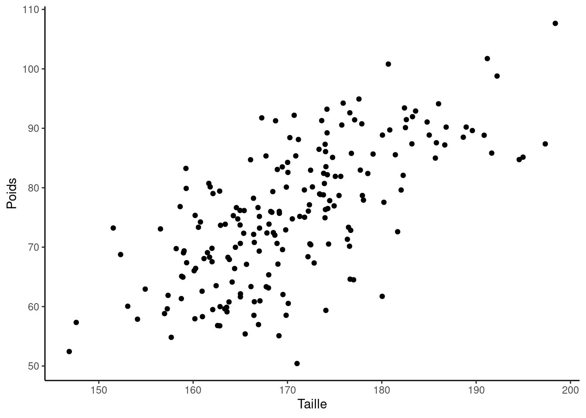
3.1.1.2 Les coefficients
Lorsque l’on excute le modèle linéaire en R, on obtient la sortie suivante, avec encadré en rouge les coefficients du modèle. On retrouve \(\beta_{0}\) qui vaut -63 et \(\beta_1\) qui vaut 0.81. Le modèle est donc le suivant : \(Poids = -63 + 0.81 \times Taille + \epsilon\).
Pour interpréter les coefficients du modèle, nous commençons par \(\beta_0\), qui nous indique que lorsque la taille est nulle, le poids serait de -63 kg, une information qui n’est pas très pertinente dans ce contexte.
En revanche, le coefficient \(\beta_1\) apporte plus d’informations : il spécifie qu’une croissance de la taille de \(n\) centimètres provoque en moyenne une hausse du poids de \(n \times 0.81\) kg. Pour illustrer, une élévation de 10 cm entraîne une augmentation moyenne du poids de 8.1 kg.
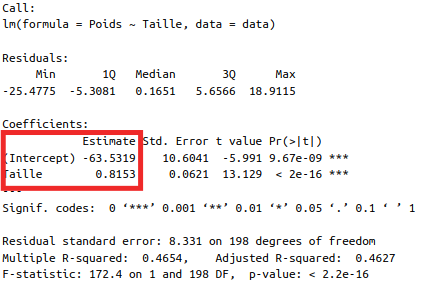
Le graphique ci-dessous présente l’augmentation moyenne du poids associée à une hausse de 10 cm de la taille avec notre modèle linéaire.
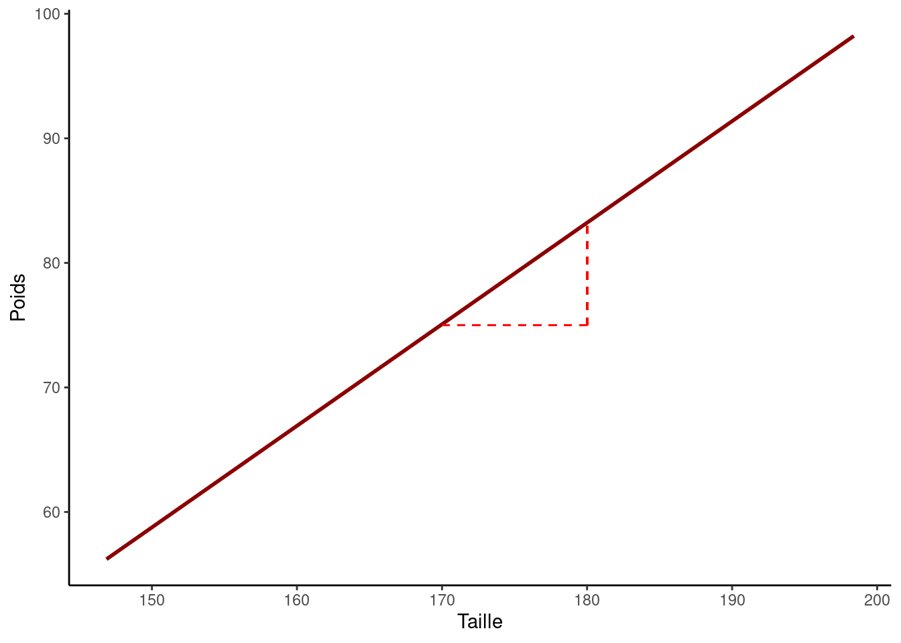
3.1.1.3 Test statistique
Pour déterminer si une variable est statistiquement associée à notre prédicteur, nous procédons à un test statistique. Au cours de ce test, nous vérifions la validité de l’hypothèse suivante : \(\beta_1 = 0\) (connue sous le nom d’hypothèse nulle), en opposition à l’hypothèse alternative \(\beta_1 \ne 0\). L’objectif est de voir si nous pouvons rejeter l’hypothèse selon laquelle \(\beta_1 = 0\), car si \(\beta_1\) est égal à zéro, alors il n’y a pas de lien entre nos deux variables, Poids et Taille.
Lorsque nous réalisons un test, nous pouvons obtenir une p-valeur associée à ce test et la comparer au seuil de 0.05. Si la p-valeur est inférieure à ce seuil, nous rejetons l’hypothèse nulle.
Dans notre cas, comme la p-valeur est très faible, nous pouvons rejeter l’hypothèse nulle et conclure à une relation statistiquement significative entre nos deux variables.
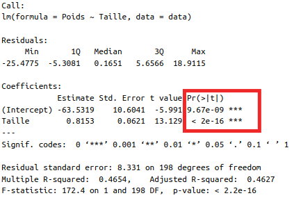
3.1.1.4 \(R^{2}\)
Enfin, nous pouvons examiner le \(R^{2}\) pour déterminer la proportion de la variance du poids qui est expliquée par la taille. Nous trouvons qu’environ 46% de la variance du poids est expliquée par l’effet de la taille. Globalement, notre modèle linéaire a donc un bon pouvoir explicatif.
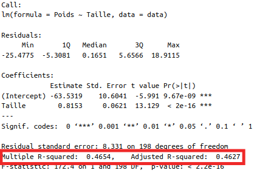
3.1.2 Prédicteur catégoriel
Sur la représentation des deux distributions des poids en fonction du sexe, on remarque une différence significative : en moyenne, les hommes semblent plus lourds que les femmes.
Lorsque nous modélisons le lien entre une variable continue dépendante et une variable discrète indépendante, nous devons choisir une modalité de référence pour la variable discrète. Dans ce cas, nous choisirons la modalité ‘Femme’ comme référence. Ainsi, dans la modélisation, le poids des hommes sera calculé comme une différence par rapport au poids des femmes.
L’équation du modèle est la suivante : \(Poids = \beta_0 + \beta_1 \times \text{1}_{\{Homme\}}\), avec \(\text{1}_{\{Homme\}}\) qui est une fonction indicatrice qui prend la valeur 1 si c’est un homme et 0 si c’est une femme.
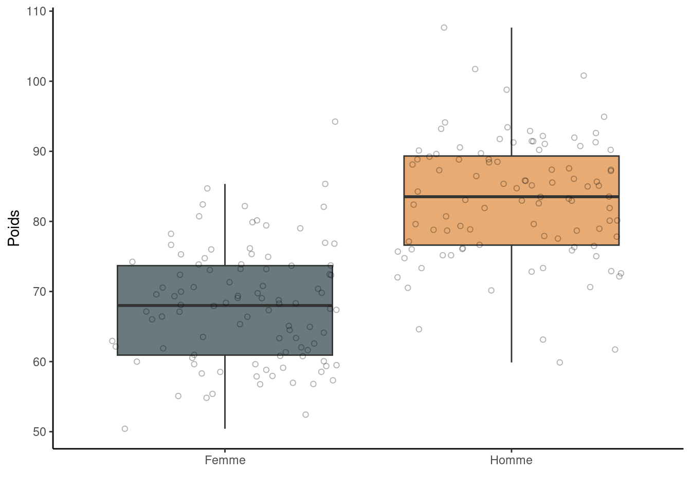
3.1.2.1 Les coefficients
Dans notre modèle, \(\beta_0\) est utilisé pour symboliser le poids moyen observé chez les femmes, ici il est de 67.9kg. De l’autre côté, la somme \(\beta_0 + \beta_1\) donne une représentation du poids moyen chez les hommes, ici il est de 83.1kg. En d’autres termes, \(\beta_1\) caractérise l’écart de poids moyen estimé entre les deux groupes (hommes et femmes), ici il est de 15.2kg.
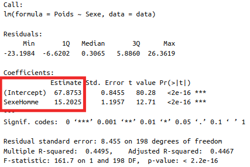
3.1.2.2 Tests statistiques
Pour déterminer s’il existe un lien statistiquement significatif entre le sexe et le poids, on vérifie si le coefficient \(beta_1\) associé au sexe dans notre modèle statistique est non-nul. La démarche est similaire à celle faite précédemment dans le cas continue.
Dans des cas où la variable analysée présente plus de deux modalités, un test global est utilisé pour tester la non-nullité de tous les coefficients correspondants à cette variable, où le nombre de coefficients (d’indicatrices) est égal à n-1 (n étant le nombre de modalités).
Dans notre cas, la p-valeur, indiquée en rouge, est inférieure au seuil de significativité de 0.05. Cela nous permet d’affirmer que le sexe est significativement associé au poids.
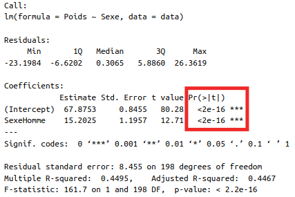
3.2 Régression multiple
Désormais, on procède à l’analyse de l’effet conjoint des deux variables explicatives en question. La présence de plusieurs variables explicatives dans notre modèle fait référence à une régression multiple.
3.2.1 Ajustement
Lorsque l’on ajoute plusieurs variables explicatives à un modèle, chaque coefficient associé à une variable explicative indique l’effet de cette variable sur la variable réponse, en “ajustant” ou en “tenant compte” des autres variables. Cela signifie qu’il montre l’effet unique de cette variable, tout en contrôlant les effets des autres variables explicatives.
3.2.1.1 Dans le cas de discret
On parle d’ajustement sur une variable quand on examine la relation entre deux variables explicatives en les additionnant, créant ainsi une somme. Cela implique l’ajout de nos deux variables explicatives. Dans notre contexte, cette démarche est représentée par l’équation qui formalise notre modèle :
\(Poids = \beta_0 + \beta_1 \times \text{1}_{\{Homme\}} + \beta_2 \times Taille + \epsilon\)
Dans une situation où l’on ajuste une variable continue et une variable discrète, le processus consiste à déterminer une ordonnée à l’origine distincte pour chaque catégorie de la variable discrète. Graphiquement, cela donne lieu à des droites parallèles, chacune représentant un sous-groupe d’une catégorie particulière. Il est à noter que toutes ces lignes ont la même pente, ce qui implique que la distance entre elles reste constante.
Ainsi, lorsqu’on procède à un ajustement simple, nous présupposons que la relation entre la taille et le poids ne varie pas en fonction du sexe ; la seule distinction résidant dans un décalage constant entre les deux groupes.
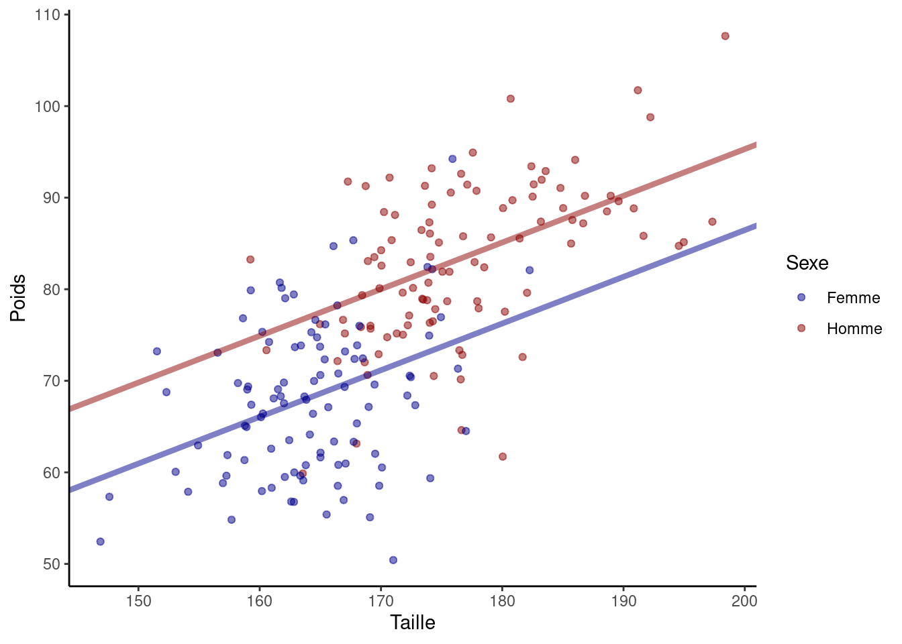
Les résultats obtenus à partir du modèle exécuté dans R indiquent que la relation entre la taille et le poids est représentée par le coefficient \(\beta_2 = 0.5\). Cela signifie qu’une augmentation de 10 cm dans la taille est associée, en moyenne, à une augmentation de 5 kg du poids, et ce pour les individus des deux sexes. De plus, notre modèle suppose que l’écart de poids entre les hommes et les femmes est constant, indépendamment de la taille, et que cet écart est de \(\beta_1 =\) 8.9 kg. Notre modèle explique environ 55% de la variance du poids.
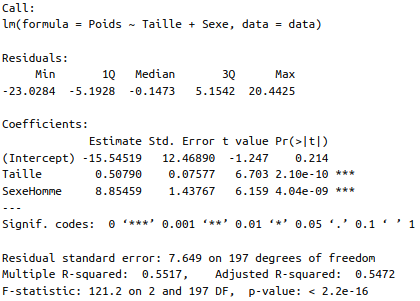
3.2.1.2 Dans le cas continue
Lorsque l’on considère deux variables continues pour expliquer une variable réponse, l’ajustement permet d’évaluer l’impact d’une variable tout en tenant compte de l’influence de l’autre. Cela signifie que si l’on augmente d’une unité l’une des variables explicatives, tout en maintenant l’autre constante, le changement associé dans la variable réponse est essentiellement attribué à cette unité supplémentaire de la première variable, avec la seconde variable étant fixée.
Prenons un exemple. Supposons qu’on cherche à comprendre comment la taille influence le poids, tout en considérant un autre facteur continu : l’âge. L’âge pourrait moduler la relation entre taille et poids. Ainsi, deux individus de même taille pourraient avoir des poids différents en fonction de leur âge, à cause des changements physiologiques liés à l’âge, comme une diminution de l’activité physique ou le processus naturel de vieillissement.
Le modèle s’écrit de la manière suivante : \(Poids = \beta_0 + \beta_1 \times Taille + \beta_2 \times Age + \epsilon\)
Lorsque l’on illustre graphiquement la relation entre le poids (y) et la taille (x), tout en ajustant sur l’âge, cela donne lieu à une série de droites de régression. Chacune de ces droites correspond à une unité d’âge spécifique. En ajustant sur l’âge, nous supposons que l’effet de l’âge sur la relation entre la taille et le poids est constant, ce qui signifie que toutes ces droites de régression seront parallèles entre elles. Ainsi, chaque droite représente comment le poids varie avec la taille pour une tranche d’âge donnée.
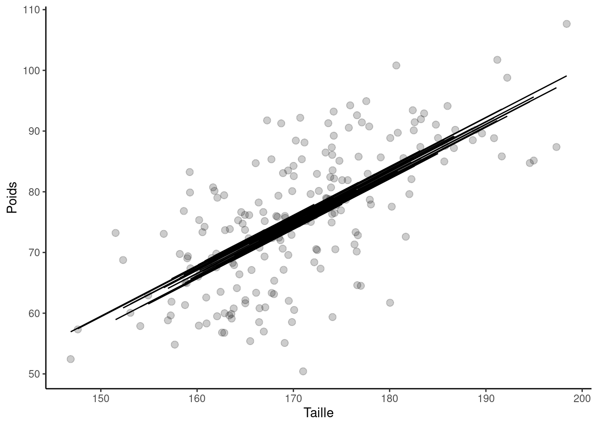
Lors de l’analyse de la sortie R de notre modèle, nous remarquons que la p-valeur associée à l’effet de la variable “âge” n’est pas inférieure au seuil de 0.05. Par conséquent, il semble que l’âge ne soit pas un facteur significatif pour la modélisation du poids.
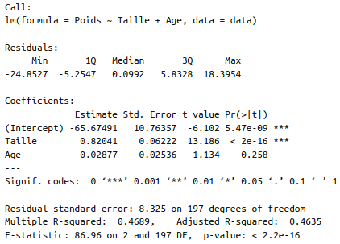
3.2.2 Interaction
Une interaction en régression se produit lorsque l’effet d’une variable sur la variable réponse dépend du niveau d’une autre variable. En d’autres termes, les variables interagissent entre elles pour influencer conjointement la variable réponse.
Reprenons notre exemple sur l’effet de la taille et du sexe sur le poids. Nous avons déjà évoqué qu’à taille égale, les hommes peuvent en moyenne peser plus que les femmes. Cependant, il se pourrait aussi que la relation entre taille et poids ne soit pas la même selon le sexe. Autrement dit, l’augmentation de poids relative à chaque centimètre supplémentaire pourrait être plus prononcée chez les hommes que chez les femmes. Plusieurs facteurs pourraient expliquer cette différence relative : des différences métaboliques ou des habitudes liées au style de vie spécifiques à chaque sexe.
Avec notre exemple le modèle s’écrit de la manière suivante :
\(Poids = \beta_0 + \beta_1 \times \text{1}_{\{Homme\}} + \beta_2 \times Taille + \beta_3 \times \text{1}_{\{Homme\}} \times Taille\)
On observe sur la figure que les hommes ont une pente plus forte que celle des femmes ce qui se traduit pour une augmentation de taille égale entre un homme et une femme, les hommes auront une augmentation de poids supérieure.
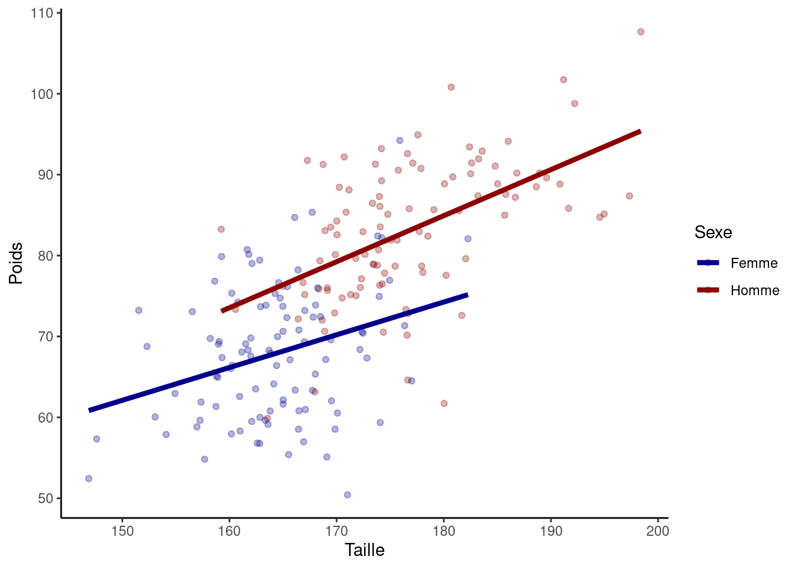